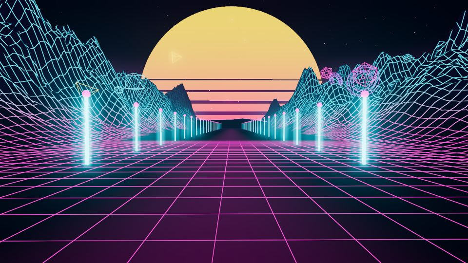
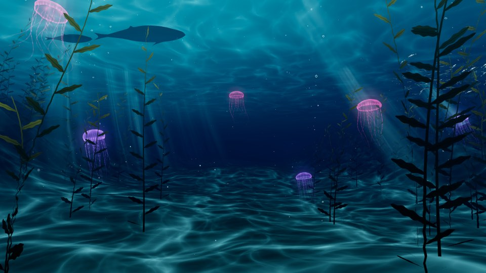
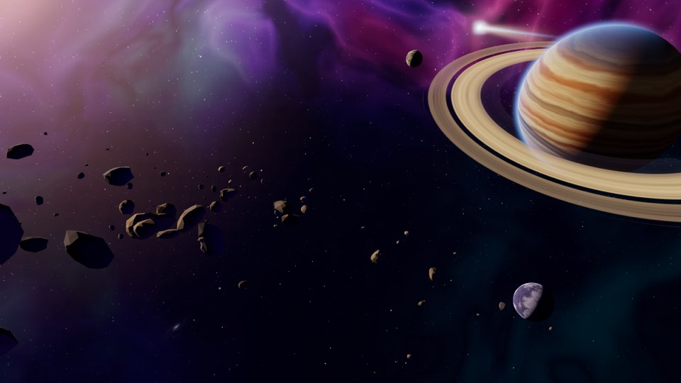
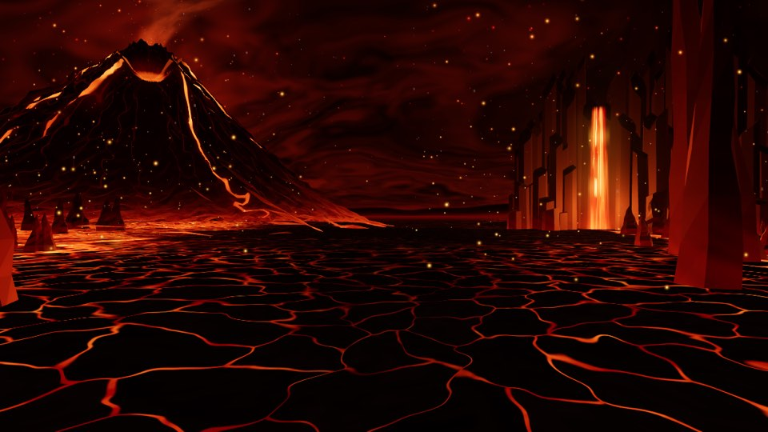

Six worlds, six soundtracks
Tangletris is a 3D falling-block puzzle game with music at its heart. The board floats in front of a living world, and every world has its own soundtrack, composed live in your browser. Clear ten lines and you travel on — from a synthwave highway to the bottom of the sea, a cherry-blossom lake, the northern lights, deep space and finally a volcano.
The Journey
In Marathon, every level takes you to the next world: Neon Drive at level 1, then Deep Blue, Sakura, Frost and Starfall, until Inferno at level 6 — and from level 7 the journey starts again from the top, only faster. Each level-up plays a transition into the next world and its soundtrack.
- Stay in one world. Press T or the world button in the top bar to step from Journey through each of the six worlds and back. A pinned world stays put however far you climb.
- Just watch and listen. Zen mode has no game over and no speed-up — a full stack is simply swept away — so you can stay in your favourite world as long as you like.
- The worlds react to you, too. When your stack nears the top, every world gets restless — the water darkens, the wind picks up, the aurora runs hot — and a nervous percussion layer joins the soundtrack.
-

Neon Drive
Levels 1, 7, 13…
An endless synthwave highway: a striped sun sinks behind wireframe mountains while the grid floor rushes at you and neon pylons flash past. The floor and the sun pulse on every kick drum, the pylons flare on the snare, and the road speeds up as the music gets more intense.
Soundtrack: Midnight Overdrive
Synthwave: detuned supersaw pads, a pulsing arpeggio, an analog bass and a gated snare. Starts at 104 BPM · A minor.Palette:
- Accent
#22d3ee - Second accent
#f472b6 - Board
#0c0620
- Accent
-

Deep Blue
Levels 2, 8, 14…
A calm underwater world: light shafts slant down from a rippling surface, kelp sways over sunlit dunes, glowing jellyfish drift up through bubble streams and whales glide just under the surface. The jellyfish pulse with the beat and glow on the chords — and when your stack gets high, the water darkens and every jelly flushes an alarmed magenta.
Soundtrack: Abyssal Drift
Underwater downtempo with a lazy swing: electric piano, a deep sub bass, bubbly plucks and a whale-song lead over brushes and shakers. Starts at 84 BPM · D Dorian.Palette:
- Accent
#3ee8f2 - Second accent
#ff8ad8 - Board
#03122a
- Accent
-

Sakura
Levels 3, 9, 15…
A torii gate stands in a twilight lake under a low moon; ink-wash mountains fade into mist, cherry trees shed petals and paper lanterns drift upwards. Petals sparkle on the snare, lanterns breathe with the kick, and when things get tense the wind picks up and the lake starts to ripple.
Soundtrack: Petals on Still Water
Koto and shakuhachi over taiko drums in the Japanese in scale, with temple bells and a gong for a crash cymbal. Starts at 92 BPM · D in scale.Palette:
- Accent
#ff8fbf - Second accent
#ffbe5c - Board
#150a1f
- Accent
-

Frost
Levels 4, 10, 16…
An arctic night: aurora curtains fold across the sky above low-poly snowy peaks, and a frozen lake mirrors it all between shores of snow-dusted pines. The aurora flares on chord changes, snow glitters on the hi-hats and shooting stars answer the music’s accents — in danger the lights run hot and the snow whips sideways.
Soundtrack: Northern Lights
Celesta and choir: a formant choir, glassy pads, celesta and harp arpeggios and slow bells over a soft beat. Starts at 80 BPM · C♯ minor.Palette:
- Accent
#4ff0b4 - Second accent
#a78bfa - Board
#051220
- Accent
-

Starfall
Levels 5, 11, 17…
Deep space: a ringed gas giant hangs over a violet nebula, its moons wheel past, a slow river of asteroids drifts by and shooting stars streak across the sky. The planet pulses on the kick, light sweeps around the rings with every bar, and when your stack climbs, the asteroid river speeds up and the stars grow restless.
Soundtrack: Orbit of Glass
A Berlin-school space sequencer: a looping synth sequence, wide pads, an analog bass, a choir and a soaring lead. Starts at 98 BPM · E Lydian.Palette:
- Accent
#a78bfa - Second accent
#fbbf5c - Board
#070618
- Accent
-

Inferno
Levels 6, 12, 18…
The volcanic forge at the end of the climb: a volcano erupts in time with the music, crust plates drift on a lava lake, a lava fall pours off a basalt cliff and embers rise through churning ash. Big accents set off eruptions, the lava fall surges on the snare, and the higher your stack, the hotter everything glows.
Soundtrack: Forge of the Mountain
Phrygian industrial metal: a distorted Reese bass, synth stabs, a dark choir, anvil hits and pounding toms. Starts at 128 BPM · E Phrygian dominant.Palette:
- Accent
#ff6a1a - Second accent
#ffc53d - Board
#120605
- Accent
Music that’s written while you play
There isn’t a single audio file in Tangletris. Every instrument — plucked strings, electric piano, bells, supersaw pads, a formant choir, a breathy flute, analog basses and a full drum kit — is synthesized in your browser with the Web Audio API.
Melodies, arpeggios and drum fills are regenerated every time a song loops, and the arrangement moves through intro, verse, chorus and breakdown, so a soundtrack never plays the same way twice. The tempo rises with your level, and the sound effects are played in key, on whatever chord the music is on — combos climb higher with every link.
The worlds listen back: grids, jellyfish, lanterns, auroras and lava pulse on the kick drum and flare on chord changes.
Runs on phones, too
The worlds are drawn in real time with WebGL 2 — shaders, instancing and particles, without a single texture or model file. On slower devices the game quietly gives up antialiasing, then resolution, then bloom, keeping only the steps that actually help, and climbs back once frames are fast again.
Press V to switch off the board’s tilt and wobble; a reduced-motion setting on your device is respected automatically. More in the how to play guide.
Start the journey
Six worlds, ten lines apart. Or put on Zen mode and just enjoy the view.